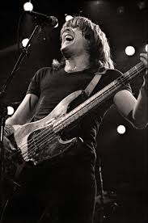

 <!doctype html>
<html lang="en">
  <head>
    <!-- Required meta tags -->
    <meta charset="utf-8">
    <meta name="viewport" content="width=device-width, initial-scale=1, shrink-to-fit=no">

    <!-- Bootstrap CSS -->
    <link rel="stylesheet" href="https://cdn.jsdelivr.net/npm/bootstrap@4.5.3/dist/css/bootstrap.min.css" integrity="sha384-TX8t27EcRE3e/ihU7zmQxVncDAy5uIKz4rEkgIXeMed4M0jlfIDPvg6uqKI2xXr2" crossorigin="anonymous">

    </html><title>VOLTAGE MUSIC</title>
  </head>
  <body style="background-color: black">
   <nav class="navbar navbar-expand-lg navbar-dark bg-black">
  <div class="container-fluid">
    <a class="navbar-brand" href="#">VOLTAGE MUSIC</a>
    <button class="navbar-toggler" type="button" data-bs-toggle="collapse" data-bs-target="#navbarNavAltMarkup" aria-controls="navbarNavAltMarkup" aria-expanded="false" aria-label="Toggle navigation">
      <span class="navbar-toggler-icon"></span>
    </button>
    <div class="collapse navbar-collapse" id="navbarNavAltMarkup">
      <div class="navbar-nav">
        <a class="nav-link active" aria-current="page" href="home.html">Home</a>
        <a class="nav-link" href="profile.html">profile</a>
        <a class="nav-link" href="albumandsong.html">Album</a>
        <a class="nav-link" href="about.html">about</a>
      </div>
    </div>
  </div>
</nav>
    <h1> Cliff Williams </h1>
    
    <article>Clifford Williams lahir pada tanggal 14 Desember 1949 di Romford, Essex, di pinggiran London. Keluarga Williams pindah ke Hoylake, dekat Liverpool, pada tahun 1961, di mana ia dipengaruhi oleh gerakan Merseybeat lokal dan memutuskan untuk menjadi musisi rock. Pada usia 13 tahun, ia dan beberapa teman membentuk sebuah band. Williams menyatakan bahwa The Rolling Stones, The Kinks dan musisi blues seperti Bo Diddley sebagai pengaruh untuk gaya permainannya. Dia kebanyakan belajar bermain gitar bass dengan cara "mendengarkan rekaman dan mempelajari notasinya", dengan pelatihan formal terbatas pada pelajaran dari bassis profesional Liverpool. Williams meninggalkan sekolah ketika ia berusia 16 tahun, menjadi seorang insinyur di siang hari dan musisi malam.<br> 


Williams sempat bermain dengan band asal Amerika, Stars sebelum membentuk Bandit pada tahun 1974. Lineup Bandit line-up adalah vokalis Jim Diamond dan drummer Graham Broad (kemudian bermain di Bucks Fizz dan bandnya Roger Waters). Kelompok ini menandatangani kontrak dengan Arista Records dan merilis album self-titled pada tahun 1977. Bandit juga tampil sebagai band pendukung sebagai Alexis Korner pada The Lost Album di tahun 1977 sebelum bubar akhir tahun itu.<br> 

Pada tahun 1977, Williams dianggap pensiun dari musik ketika Bandit dibubarkan, tapi salah satu gitaris grup, Jimmy Litherland, meyakinkannya untuk ikut audisi untuk heavy rockers asal Australia AC/DC. Mereka mencari bassis saat Mark Evans dipecat tak lama setelah rekaman album studio Let There Be Rock di tahun 1977. AC/DC telah terbentuk di Australia pada tahun 1973 dan pada pertengahan 1977 line-up band adalah Malcolm Young pada gitar ritem dan vokal latar bersama adiknya Angus Young pada gitar utama, Phil Rudd pada drum dan Bon Scott pada vokal. Williams mengatakan tak lama setelah diberitahu tentang audisi AC/DC, ia melihat band di Top of the Pops dan bereaksi positif, menggambarkan mereka sebagai "sangat hebat".<br>

Peran Williams di AC / DC adalah untuk menyediakan alur bass yang stabil yang mengikuti gitar ritem dari Malcolm Young, sebagian besar terdiri dari delapan not. Alur bassnya kadang-kadang ditulis oleh Malcolm dan Angus Young selama pembuatan komposisi, dan di lain waktu Williams mengembangkan mereka berdasarkan pada trek instrumental lainnya. Williams mengatakan ia memainkan "hal yang sama di setiap lagu, untuk sebagian besar. Dalam musik AC / DC, lagunya lebih penting daripada bit setiap individu di dalamnya".<br>


</article>
 <!-- Footer -->
<footer class="page-footer font-small teal pt-4">

  
  <div class="page-footer text-center py-3">
           <a target="_blank" href="https://instagram.com/acdc?igshid=17r2hu7s2z03l"></a>
          <a target="_blank" href="https://www.twitter.com/acdc"></a>
          <a target="_blank" href="https://youtu.be/gEPmA3USJdI"></a>
          <a target="_blank" href="https://www.facebook.com/acdc"></a>
          <br><br>
  <div class="footer-copyright text-center py-3">© 2020 Copyright:
    <a href="https://mdbootstrap.com/"> Voltagemusic</a>
  </div>

</footer>
<!-- Footer -->
    <!-- Optional JavaScript; choose one of the two! -->

    <!-- Option 1: jQuery and Bootstrap Bundle (includes Popper) -->
    <script src="https://code.jquery.com/jquery-3.5.1.slim.min.js" integrity="sha384-DfXdz2htPH0lsSSs5nCTpuj/zy4C+OGpamoFVy38MVBnE+IbbVYUew+OrCXaRkfj" crossorigin="anonymous"></script>
    <script src="https://cdn.jsdelivr.net/npm/bootstrap@4.5.3/dist/js/bootstrap.bundle.min.js" integrity="sha384-ho+j7jyWK8fNQe+A12Hb8AhRq26LrZ/JpcUGGOn+Y7RsweNrtN/tE3MoK7ZeZDyx" crossorigin="anonymous"></script>

    <!-- Option 2: jQuery, Popper.js, and Bootstrap JS
    <script src="https://code.jquery.com/jquery-3.5.1.slim.min.js" integrity="sha384-DfXdz2htPH0lsSSs5nCTpuj/zy4C+OGpamoFVy38MVBnE+IbbVYUew+OrCXaRkfj" crossorigin="anonymous"></script>
    <script src="https://cdn.jsdelivr.net/npm/popper.js@1.16.1/dist/umd/popper.min.js" integrity="sha384-9/reFTGAW83EW2RDu2S0VKaIzap3H66lZH81PoYlFhbGU+6BZp6G7niu735Sk7lN" crossorigin="anonymous"></script>
    <script src="https://cdn.jsdelivr.net/npm/bootstrap@4.5.3/dist/js/bootstrap.min.js" integrity="sha384-w1Q4orYjBQndcko6MimVbzY0tgp4pWB4lZ7lr30WKz0vr/aWKhXdBNmNb5D92v7s" crossorigin="anonymous"></script>
    -->
  </body>

